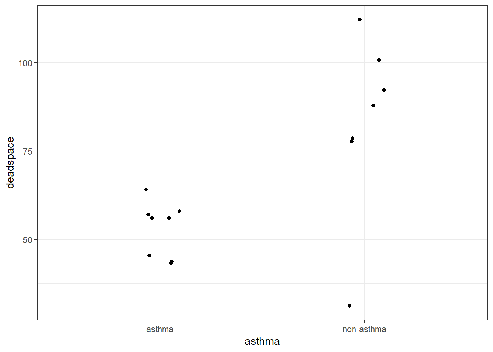
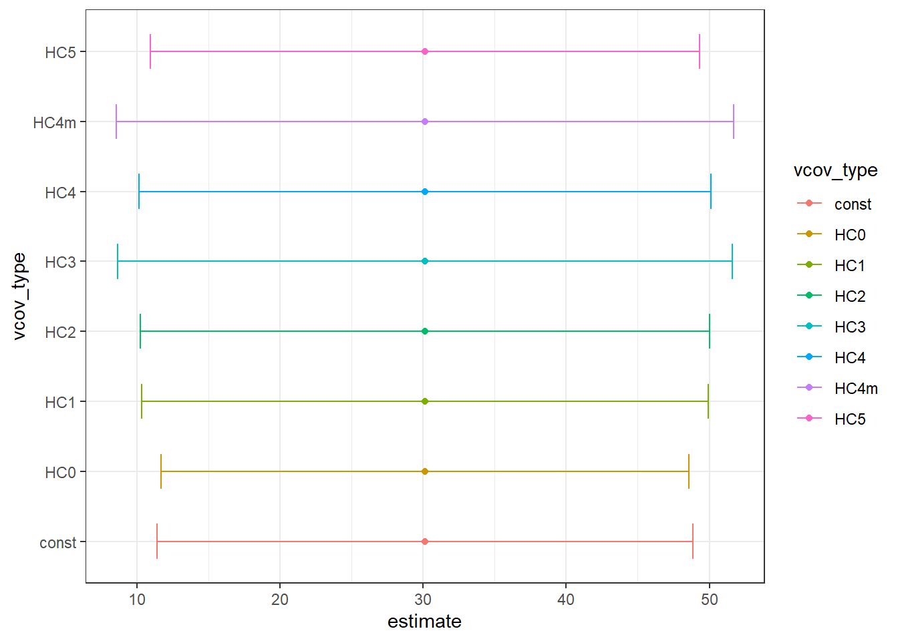

pacman::p_load(sandwich, tidyverse, broom, lmtest, estimatr, easystats, marginaleffects,
rstatix, ggthemes, ggsci, pubh, ggpubr, hrbrthemes, fishmethods, janitor,
lme4)Robust standard errors in R
About
This script is built mainly on this paper https://academic.oup.com/ije/article/50/1/346/6044447#229773580
Packages
Robust standard errors for heteroscedasticity: Asthma example
# Create dataset
asthma_df <-
tibble(
asthma = c(rep("asthma",8), rep("non-asthma",7)),
deadspace = c(43, 44, 45, 56, 56, 57, 58, 64,
31, 78, 79, 88, 92, 101, 112)
)
# Run a t-test (Showing different ways to do the same thing)
t.test(deadspace ~ asthma, data = asthma_df) |>
report()Warning: Unable to retrieve data from htest object. Returning an approximate
effect size using t_to_d().Effect sizes were labelled following Cohen's (1988) recommendations.
The Welch Two Sample t-test testing the difference of deadspace by asthma (mean
in group asthma = 52.88, mean in group non-asthma = 83.00) suggests that the
effect is negative, statistically significant, and large (difference = -30.12,
95% CI [-54.18, -6.07], t(6.95) = -2.97, p = 0.021; Cohen's d = -2.25, 95% CI
[-4.09, -0.32])t.test(deadspace ~ asthma, data = asthma_df) |> tidy()| estimate | estimate1 | estimate2 | statistic | p.value | parameter | conf.low | conf.high | method | alternative |
|---|---|---|---|---|---|---|---|---|---|
| -30.1 | 52.9 | 83 | -2.97 | 0.0211 | 6.95 | -54.2 | -6.07 | Welch Two Sample t-test | two.sided |
t_test(deadspace ~ asthma, data = asthma_df)| .y. | group1 | group2 | n1 | n2 | statistic | df | p |
|---|---|---|---|---|---|---|---|
| deadspace | asthma | non-asthma | 8 | 7 | -2.97 | 6.95 | 0.0211 |
# Plot data and calculate standard deviation to check constant variance assumption
asthma_df |>
ggplot(aes(x = asthma, y = deadspace)) + geom_jitter(width = 0.1) + theme_bw()
# Get standard deviations
asthma_df |>
group_by(asthma) |>
get_summary_stats(deadspace)| asthma | variable | n | min | max | median | q1 | q3 | iqr | mad | mean | sd | se | ci |
|---|---|---|---|---|---|---|---|---|---|---|---|---|---|
| asthma | deadspace | 8 | 43 | 64 | 56 | 44.8 | 57.2 | 12.5 | 7.41 | 52.9 | 7.79 | 2.75 | 6.51 |
| non-asthma | deadspace | 7 | 31 | 112 | 88 | 78.5 | 96.5 | 18 | 14.8 | 83 | 25.9 | 9.78 | 23.9 |
This means we have unequal variance. Let’s check the standard error for the difference in means using lm
lm(deadspace ~ asthma, data = asthma_df) |> tidy(conf.int = T)| term | estimate | std.error | statistic | p.value | conf.low | conf.high |
|---|---|---|---|---|---|---|
| (Intercept) | 52.9 | 6.53 | 8.09 | 1.97e-06 | 38.8 | 67 |
| asthmanon-asthma | 30.1 | 9.57 | 3.15 | 0.00768 | 9.46 | 50.8 |
The estimates above are assuming unequal variance, which is not true in our case. So, let’s see what would happen if we used HC3 to estimate SE and 95%CI
# Using model_parameters from eaystats package
model_parameters(
lm(deadspace ~ asthma, data = asthma_df),
vcov = "HC3"
) |> tibble()| Parameter | Coefficient | SE | CI | CI_low | CI_high | t | df_error | p |
|---|---|---|---|---|---|---|---|---|
| (Intercept) | 52.9 | 2.94 | 0.95 | 46.5 | 59.2 | 18 | 13 | 1.47e-10 |
| asthmanon-asthma | 30.1 | 11 | 0.95 | 6.44 | 53.8 | 2.75 | 13 | 0.0166 |
# Using coeftest package
lm(deadspace ~ asthma, data = asthma_df) |>
coeftest(vcov = vcovHC, type = "HC3") |>
tidy(conf.int = T)| term | estimate | std.error | statistic | p.value | conf.low | conf.high |
|---|---|---|---|---|---|---|
| (Intercept) | 52.9 | 2.94 | 18 | 1.47e-10 | 46.5 | 59.2 |
| asthmanon-asthma | 30.1 | 11 | 2.75 | 0.0166 | 6.44 | 53.8 |
From the numbers above we see that HC3 robust standard errors are larger leading to higher p-values and wider confidence intervals.
The chunk below shows different forms of robust HC SEs for the same model
# Create a function to quickly compare between estimators of SE
check_HC_se <- function(model, vcov_types = c("const","HC0", "HC1", "HC2", "HC3", "HC4", "HC4m", "HC5"), exponentiate = F){
all_estimates <- tibble()
for (i in vcov_types) {
estimates <- model |>
coeftest(vcov = vcovHC, type = i) |>
tidy(conf.int = T) |>
group_by(term) |>
mutate(
across(c(estimate, conf.low,conf.high), ~ifelse(exponentiate == T, exp(.x),.x))
) |>
ungroup() |>
mutate(vcov_type = i) |>
relocate(vcov_type) |>
filter(term!= "(Intercept)")
all_estimates <- bind_rows(all_estimates, estimates)
}
all_estimates
}
# Use the function with lm (equivalent to t test p values)
mod_lm <- lm(deadspace ~ asthma, data = asthma_df)
# See results
check_HC_se(
model = mod_lm
)| vcov_type | term | estimate | std.error | statistic | p.value | conf.low | conf.high |
|---|---|---|---|---|---|---|---|
| const | asthmanon-asthma | 30.1 | 9.57 | 3.15 | 0.00768 | 9.46 | 50.8 |
| HC0 | asthmanon-asthma | 30.1 | 9.41 | 3.2 | 0.00696 | 9.79 | 50.5 |
| HC1 | asthmanon-asthma | 30.1 | 10.1 | 2.98 | 0.0107 | 8.28 | 52 |
| HC2 | asthmanon-asthma | 30.1 | 10.2 | 2.97 | 0.0109 | 8.18 | 52.1 |
| HC3 | asthmanon-asthma | 30.1 | 11 | 2.75 | 0.0166 | 6.44 | 53.8 |
| HC4 | asthmanon-asthma | 30.1 | 10.2 | 2.95 | 0.0112 | 8.07 | 52.2 |
| HC4m | asthmanon-asthma | 30.1 | 11 | 2.74 | 0.017 | 6.33 | 53.9 |
| HC5 | asthmanon-asthma | 30.1 | 9.8 | 3.07 | 0.00889 | 8.95 | 51.3 |
# Plot
check_HC_se(
model = mod_lm
) |>
ggplot(aes(color = vcov_type)) +
geom_errorbar(aes(y = vcov_type, x = estimate, xmin = conf.low,
xmax = conf.high, width = 0.5
)) + geom_point(aes(x = estimate, y = vcov_type))+ theme_bw()# Use the function with glm (equivalent to z test p values)
mod_glm <- glm(deadspace ~ asthma,family=gaussian(link="identity"), data = asthma_df)
# See results
check_HC_se(
model = mod_glm
)| vcov_type | term | estimate | std.error | statistic | p.value | conf.low | conf.high |
|---|---|---|---|---|---|---|---|
| const | asthmanon-asthma | 30.1 | 9.57 | 3.15 | 0.00164 | 11.4 | 48.9 |
| HC0 | asthmanon-asthma | 30.1 | 9.41 | 3.2 | 0.00137 | 11.7 | 48.6 |
| HC1 | asthmanon-asthma | 30.1 | 10.1 | 2.98 | 0.00289 | 10.3 | 49.9 |
| HC2 | asthmanon-asthma | 30.1 | 10.2 | 2.97 | 0.00302 | 10.2 | 50 |
| HC3 | asthmanon-asthma | 30.1 | 11 | 2.75 | 0.00601 | 8.63 | 51.6 |
| HC4 | asthmanon-asthma | 30.1 | 10.2 | 2.95 | 0.00317 | 10.1 | 50.1 |
| HC4m | asthmanon-asthma | 30.1 | 11 | 2.74 | 0.00624 | 8.54 | 51.7 |
| HC5 | asthmanon-asthma | 30.1 | 9.8 | 3.07 | 0.00212 | 10.9 | 49.3 |
# Plot
check_HC_se(
model = mod_glm
) |>
ggplot(aes(color = vcov_type)) +
geom_errorbar(aes(y = vcov_type, x = estimate, xmin = conf.low,
xmax = conf.high, width = 0.5
)) + geom_point(aes(x = estimate, y = vcov_type)) + theme_bw()
We can see that HC4m is the most conservative followed by HC3
Robust standard errors for incorrect variance function
See the paper for theory
# Create dataset
## method 1
df <- tibble(
occupation = c(rep(1,50), rep(0, 55)), # 0 for farmers and 1 for printers
breastfeeding = c(rep(1,36),rep(0,50-36),
rep(1,30), rep(0,55-30)
)
)
## method 2
df <- expand_grid(
occupation = c(1, 0), # 0 for farmers and 1 for printers
breastfeeding = c(0,1)
) |>
mutate(
x = c(14,36,25,30)
) |>
uncount(x)
df |> count(occupation, breastfeeding)| occupation | breastfeeding | n |
|---|---|---|
| 0 | 0 | 25 |
| 0 | 1 | 30 |
| 1 | 0 | 14 |
| 1 | 1 | 36 |
Estimate risk ratio with log-binomial and log-Poisson models
rr_logbinomial <- glm(breastfeeding ~ occupation, data = df, family = binomial("log"))
rr_logPoisson <- glm(breastfeeding ~ occupation, data = df, family = poisson("log"))
rr_logbinomial |>
tidy(exponentiate = T, conf.int = T)| term | estimate | std.error | statistic | p.value | conf.low | conf.high |
|---|---|---|---|---|---|---|
| (Intercept) | 0.545 | 0.123 | -4.92 | 8.47e-07 | 0.414 | 0.673 |
| occupation | 1.32 | 0.151 | 1.83 | 0.0667 | 0.985 | 1.81 |
rr_logPoisson |>
tidy(exponentiate = T, conf.int = T)| term | estimate | std.error | statistic | p.value | conf.low | conf.high |
|---|---|---|---|---|---|---|
| (Intercept) | 0.545 | 0.183 | -3.32 | 0.0009 | 0.373 | 0.765 |
| occupation | 1.32 | 0.247 | 1.12 | 0.261 | 0.814 | 2.16 |
Poisson model has inflated SEs. We will correct for that now and compare
# This is essentially the modified Poisson regression approach
check_HC_se(
model = rr_logPoisson,
exponentiate =T # To get RR estimates instead of log(RR)
)| vcov_type | term | estimate | std.error | statistic | p.value | conf.low | conf.high |
|---|---|---|---|---|---|---|---|
| const | occupation | 1.32 | 0.152 | 1.83 | 0.0669 | 0.981 | 1.78 |
| HC0 | occupation | 1.32 | 0.151 | 1.83 | 0.0667 | 0.981 | 1.78 |
| HC1 | occupation | 1.32 | 0.153 | 1.82 | 0.0694 | 0.978 | 1.78 |
| HC2 | occupation | 1.32 | 0.153 | 1.82 | 0.0693 | 0.978 | 1.78 |
| HC3 | occupation | 1.32 | 0.154 | 1.8 | 0.072 | 0.975 | 1.79 |
| HC4 | occupation | 1.32 | 0.153 | 1.82 | 0.0693 | 0.978 | 1.78 |
| HC4m | occupation | 1.32 | 0.154 | 1.8 | 0.0719 | 0.976 | 1.79 |
| HC5 | occupation | 1.32 | 0.152 | 1.82 | 0.068 | 0.98 | 1.78 |
Note that HC0 is the same as the model-based standard error of the logarithm of risk ratio. There are several other robust standard errors adjusting HC0 for biases due to small-sample and leveraged data: “HC0m”, “HC1”, “HC2”, “HC3”, “HC4”, “HC4m”, “HC5”
Robust standard errors for clutering
df_cluster_trial <- tibble::tribble(
~Subject, ~`BMI`, ~Treatment, ~Practice,
1L, 26.2, 1L, 1L,
2L, 27.1, 1L, 1L,
3L, 25, 1L, 2L,
4L, 28.3, 1L, 2L,
5L, 30.5, 1L, 3L,
6L, 28.8, 1L, 4L,
7L, 31, 1L, 4L,
8L, 32.1, 1L, 4L,
9L, 28.2, 1L, 5L,
10L, 30.9, 1L, 5L,
11L, 37, 0L, 6L,
12L, 38.1, 0L, 6L,
13L, 22.1, 0L, 7L,
14L, 23, 0L, 7L,
15L, 23.2, 0L, 8L,
16L, 25.7, 0L, 8L,
17L, 27.8, 0L, 9L,
18L, 28, 0L, 9L,
19L, 28, 0L, 10L,
20L, 31, 0L, 10L
) |>
janitor::clean_names()
# Methods to estimate intra-cluster correlation coefficient
icc_estimate <- icc(lmer(bmi~(1|practice), data = df_cluster_trial))
icc_estimate$ICC_unadjusted[1] 0.8686351clus.rho(popchar = df_cluster_trial$bmi,
cluster = df_cluster_trial$practice,
type = 3)$icc
value
ANOVA rho 0.868799